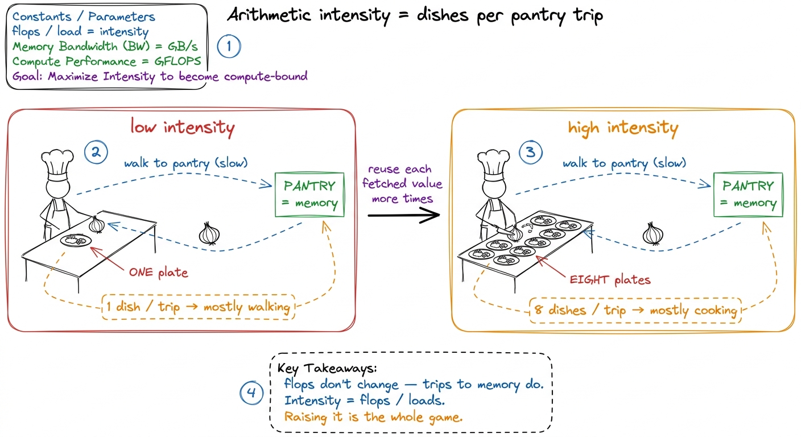
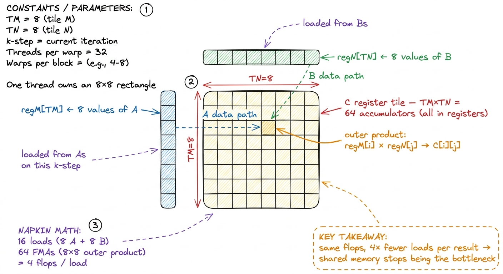
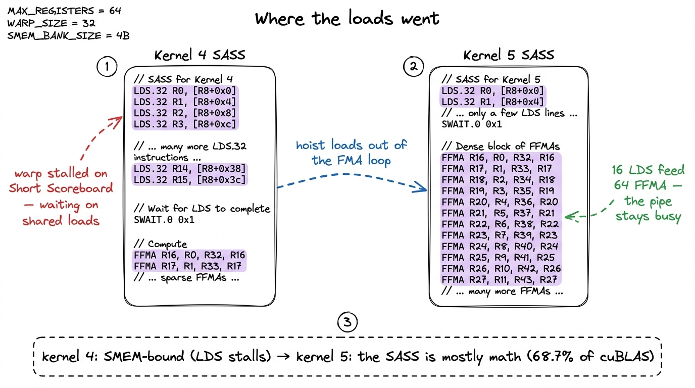

Kernel 5: 2D block-tiling 68.7%
The last kernel taught us a rule I want to keep pulling on until it stops paying: the more results a single thread computes, the fewer times it has to touch memory for each one. In kernel 4 we gave every thread a column of TM = 8 outputs, loaded one value of B from shared memory, and reused it against eight cached values of A. That one idea took us from 12.8% of cuBLAS to 36.5%. So the obvious question is: if computing 8 results per thread was good, what does computing 64 per thread do?
This is kernel 5, and it is the single biggest jump in the whole ladder. We go from 36.5% of cuBLAS to 68.7% — nearly doubling throughput — by changing almost nothing conceptually and quite a lot mechanically. The trick is to stop thinking of a thread as owning a strip of the output and start thinking of it as owning a small rectangle.
The hypothesis
In the 1D-tiling kernel, each thread walked the shared-memory k loop and, on every step, did TM = 8 fused multiply-adds. To feed those 8 FMAs it read TM = 8 values of A from shared memory and 1 value of B — a total of 9 SMEM loads to perform 8 flops. That is an on-chip arithmetic intensity of a hair under 1 flop per load. Better than global memory, but shared memory is now the wall: the profiler on kernel 4 shows the pipes stalled waiting on LDS instructions, not on math.1 LDS is the SASS mnemonic for a shared-memory load. When the warp scheduler is stalled on Short Scoreboard waiting for LDS results, you are shared-memory-throughput bound — the exact regime kernel 5 is designed to escape.
The fix is the same fix, applied in the other dimension too. Instead of TM results in a column, each thread computes a TM × TN register tile — an 8×8 block of the output C, held entirely in registers. To fill that 8×8 tile on one k step, the thread loads TM = 8 values from the A shared tile into a register cache, TN = 8 values from the B shared tile into another register cache, and then computes the full outer product: every one of the 8 cached A values multiplied against every one of the 8 cached B values, TM × TN = 64 FMAs.
Count the memory traffic. To do those 64 multiply-adds we did TM + TN = 16 shared-memory loads. That is 4 flops per load, up from ~1. We did not change the number of flops — a GEMM is a GEMM — we changed how much data-reuse we extract from each byte we pull out of shared memory. The general statement of the trick is exactly this: a thread computing a TM × TN tile does TM × TN FMAs but only TM + TN loads, and the ratio (TM·TN)/(TM+TN) grows as the tile grows.

figure rendering · The per-thread register tile. Sixteen loads feed sixty-four multiply-aThe tiling, one level up
Nothing about the outer structure changed from kernel 4, so I will keep it brief. We tile the output C into blocks of BM × BN, and each thread block is responsible for one such block.2 We use BM = BN = 128, BK = 8, TM = TN = 8. A 128×128 output block, tiled into 8×8 register tiles, needs (128·128)/(8·8) = 256 threads — so we launch 256-thread blocks, well under the 1024 max, which keeps register pressure survivable. A block streams the two input strips it needs — a BM × BK slab of A and a BK × BN slab of B — through shared memory (SMEM) in chunks of BK along the k axis, exactly as before. The only thing that is new lives inside the block, in how the 256 threads carve up that 128×128 output.
Each thread owns a TM × TN = 8×8 sub-rectangle of the block's output. The block computes BM × BN = 128 × 128 = 16,384 output elements, and with 256 threads that is 16384 / 256 = 64 results per thread — which is exactly our 8×8 register tile. The napkin arithmetic closes: (128 × 128) / (256 × 8 × 8) = 1, every output element accounted for, no thread idle.

figure rendering · The zoom sequence: grid → block → thread. Each level reuses the tile bThe code
The inner loop is where the outer product lives, and it is worth reading carefully because the ordering is the whole point. For each dotIdx step across the shared-memory BK slab, we first pull the relevant A and B values into small register arrays regM and regN, and only then run the doubly-nested FMA loop. Hoisting the loads out of the FMA loop is what turns TM × TN loads into TM + TN:
// registers for this thread's TM x TN output tile
float threadResults[TM * TN] = {0.0f};
float regM[TM] = {0.0f};
float regN[TN] = {0.0f};
// outer loop over the block's k-slab, already staged in As/Bs
for (uint dotIdx = 0; dotIdx < BK; ++dotIdx) {
// 1. load this thread's TM values of A and TN values of B into registers
for (uint i = 0; i < TM; ++i)
regM[i] = As[(threadRow * TM + i) * BK + dotIdx];
for (uint j = 0; j < TN; ++j)
regN[j] = Bs[dotIdx * BN + threadCol * TN + j];
// 2. the outer product: TM*TN FMAs from TM+TN loaded values
for (uint i = 0; i < TM; ++i)
for (uint j = 0; j < TN; ++j)
threadResults[i * TN + j] += regM[i] * regN[j];
}Two details earn their keep. First, regM, regN, and threadResults are all fixed-size arrays with compile-time bounds, so nvcc unrolls both loops fully and keeps every entry in a register — no local-memory spill, no indexing overhead.3 This only holds while the arrays stay small enough. At TM = TN = 8 we need 64 + 8 + 8 = 80 registers for the tile alone, plus loop and address registers; push TM/TN to 16 and the accumulators alone want 256, past the 255-registers-per-thread ceiling, and the compiler spills to local memory (which is really L1/HBM) and performance falls off a cliff. Second, notice the ordering: the regM/regN loads are hoisted above the doubly-nested FMA loop. The naive alternative — indexing As and Bs directly inside the i,j loop — would issue TM × TN shared-memory loads; pulling them into the two small register caches first is exactly what collapses that to TM + TN. The As tile is still stored row-major here (As[(threadRow*TM+i)*BK + dotIdx]), so the TM reads for one thread stride by BK; transposing As so those reads become contiguous — and coalesce cleanly out of shared memory — is a separate win we defer to the next kernel.
The measurement
We build it, we check correctness against the FP32 reference, and we benchmark. Kernel 4 landed at 8,474 GFLOP/s, 36.5% of cuBLAS. Kernel 5 comes in at roughly 15,972 GFLOP/s — about 68.7% of cuBLAS, a 1.9× speedup from a single structural change. We have, for the first time on this ladder, crossed the halfway line to a library NVIDIA has been tuning for fifteen years.
The profiler tells the same story from the other side. Point Nsight Compute at it and the shared-memory pressure that dominated kernel 4 has drained away. The per-result accounting makes it concrete: where 1D tiling did roughly K × 2 shared-memory accesses per output element, 2D tiling does about K / 4 — an 8× reduction in SMEM traffic per result, now showing up as far fewer stalled cycles on the LDS pipe. The per-k-step intensity we computed earlier (4 flops per load) and this per-result reduction are two views of the same move: reusing each loaded value against a whole row or column of the register tile.4 Global-memory traffic drops too — from ~K/32 to ~K/64 GMEM loads per result, a 2× cut — because a wider register tile means each byte streamed from HBM into shared memory is reused by more FMAs before it is evicted. Both memory levels get relieved by the same move.

figure rendering · The evidence in the assembly: kernel 5's inner loop is a wall of FFMAThere is a deeper reading here, and it connects straight back to the three regimes. Every kernel on this ladder has been a march up a hierarchy of memories. Kernel 1 was HBM-bound. Coalescing and shared memory pulled the working set onto the chip. 1D tiling pushed reuse into registers but left us shared-memory-bound. 2D tiling deepens that same register reuse until — for the first time — neither memory level is the obvious wall, and the SASS is mostly FFMA. We are becoming compute-bound the honest way: not by doing less work, but by arranging the work so the arithmetic units rarely wait.
What this tells us to do next
68.7% is a genuine milestone, but the remaining 31% is still real money, and the profiler is already pointing at where it went. Two things stand out. Our shared-memory loads still move one 4-byte float at a time; the memory system would rather move 16 bytes in a single transaction, which means the next win is vectorized loads — reading four floats at once with float4 / LDS.128, cutting the number of load instructions by 4× even though the byte count is unchanged.5 A float4 load is one LDS.128 instruction instead of four LDS.32s. It also forces 16-byte alignment on our shared-memory layout, which is why kernel 6 introduces vectorized loads and the As transpose together — the alignment constraint ripples back into how we store As. That is kernel 6, and it takes us to 78.4%.
After that, the parameters BM, BN, BK, TM, TN stop being obvious. They trade off occupancy against register-tile size against shared-memory footprint, and the sweet spot is not something you can reason to from a napkin — you have to search it. So kernel 7 is an autotuning pass over that parameter space (84.8%), and kernel 8 restructures the block into warptiles to squeeze the last of it (93.7%). But every one of those is a refinement of the idea we just installed: give each thread a rectangle of the output, and feed its FMAs from registers. The rectangle was the jump. Everything after is polish.